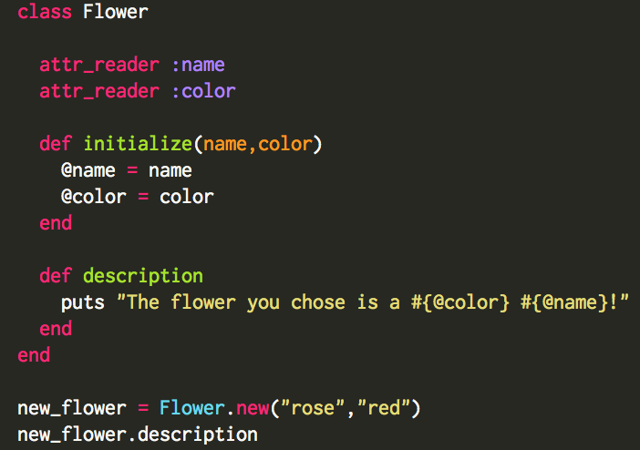
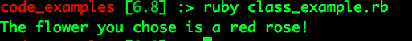

Ruby Classes
February 28, 2016
What is a Ruby class?
A class is an excellent way to store a specific block of code that can be run as many times as the user wants. The class acts as a blueprint, and sets up the variables and methods that will be used. Instance variables are available to a particular instance of a class and are usually tied to particular instance methods. Classes are widely used throughout the programming world in order to keep code concise and repeatable. All that needs to change are the inputs given outside of the class, and the method will run!
How about an example?
Classes are most easily understood through a real-world example. Lets say you want to create a block of code for flowers, which will specify type, color, region, height, and flowering season. A class would be an excellent way to store this information, because you can have different methods for each specific area. Since you have created a class, the inputs of the flower are entered in outside the class and will adjust accordingly. If you have mutliple flowers, you can run the same code on all of them! In the example below, I have created a class called Flower, and initialized it with @name and @color. @name and @color are instance variables, which means they can be referenced with particular instances of the class. This is seen in the description method, which pulls in the name and the color to print out a string. The method call after the class is closed will specifically reference the desired variables, which will then be run through the class.
When Ruby runs this code through the interpreter, we will see the description:
Ruby classes are an everday part of a programmers world, and should be taken advantage of!